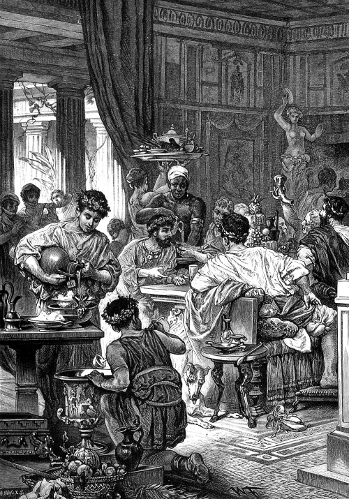

История в бокалах . Императорская лоза.


Бани, вино и секс разрушают наши тела.
Но что делает жизнь достойной жизни,
кроме бань, вина и секса?
Рим против Греции
В середине II века до н. э. римляне, населяющие центральную Италию, вытеснили греков как доминирующую державу в Средиземноморье. Это была странная победа, поскольку римляне, как и многие другие европейские народы, пользовались достижениями греческой культуры. Они заимствовали греческих богов и связанные с ними мифы, приняли модифицированную форму греческого алфавита и подражали греческой архитектуре. Римская конституция была смоделирована по греческим лекалам.
Образованные римляне изучали греческую литературу и могли говорить на этом языке. Все это заставило некоторых римлян утверждать, что предполагаемая победа Рима над Грецией была на самом деле поражением. Когда прекрасные греческие статуи были торжественно привезены в Рим после разграбления Сиракуз в 212 году до н. э., прямолинейный до грубости Катон Старший заметил, что «побежденные победили нас, а не мы их». И он был не так уж не прав.
Катон и другие борцы с пороками и роскошью сравнивали слабых, ненадежных и самонадеянных греков с суровыми и практичными римлянами. Они утверждали, что греческая культура, когда-то обладавшая многими замечательными качествами, с тех пор выродилась: греки, излишне очарованные собственной славной историей, чрезмерно предались словоблудию и философствованию. Тем не менее, несмотря на все эти критические замечания, римляне отдавали должное греческой культуре. Парадоксальным результатом было то, что, хотя многие римляне опасались стать слишком похожими на греков, они распространяли их интеллектуальное и художественное наследие даже шире, чем когда-либо прежде, поскольку сфера римского влияния не ограничивалась пределами Средиземноморья.
Вино предлагало один из способов разрешить этот парадокс, поскольку виноградарство и виноделие стали неким мостиком, объединяющим греческие и римские культурные ценности. Римляне, гордившиеся своим происхождением и считавшие себя нацией воинов, после успешных кампаний получали в награду участки земли и становились фермерами. Самой престижной сельскохозяйственной культурой стала виноградная лоза. Занимаясь виноградарством, фермеры с «дворянским» прошлым верили, что сохраняют верность корням, даже когда наслаждались изысканным вином на виллах, выстроенных в греческом стиле.
Сам Катон согласился с тем, что виноградарство дало возможность примирить римские традиции бережливости и простоты с греческой изощренностью. Культивирование лозы было честным и довольно приземленным занятием, но получавшееся в итоге вино становилось символом цивилизации. О военной мощи этой цивилизации, основанной трудолюбивыми фермерами, свидетельствовал значок римского центуриона: деревянный жезл, вырезанный из саженца виноградной лозы.
Все лозы ведут в Рим
В начале II века до н. э. греческое вино по-прежнему доминировало в средиземноморской виноторговле и было единственным продуктом, экспортируемым в значительных количествах на итальянский полуостров. Но римляне быстро догоняли греков – виноделие распространялось от бывших греческих колоний на юге в регион, известный грекам как Энотрия, или «земля обученных лоз». Итальянский полуостров стал главным винодельческим регионом в мире около 146 года до н. э., сразу после падения Карфагена в Северной Африке и разграбления греческого города Коринф.
Вместе со многими традициями греческой культуры римляне приняли и лучшие вина Греции, и само виноделие. Лозы были привезены с греческих островов, что позволило, например, производить в Италии вино греческого острова Хиос. Виноделы
начали подражать самым популярным греческим винам, в частности вино с ароматом морской воды Коан (вино с острова Кос) – это скорее стиль, чем место происхождения. Ведущие виноделы переезжали из Греции в Италию, в новый центр виноторговли. К 70 году н. э. римский писатель Плиний Старший записал, что из 80 вин, распространенных в Риме, две трети производились в Италии.
Популярность вина была так велика, что натуральное хозяйство уже не могло удовлетворить спрос, и «благородные фермеры» уступили пальму первенства крупным хозяйствам, использовавшим рабский труд. Производство вина росло за счет производства зерна, так что Рим стал зависеть от импорта зерна из африканских колоний. Развитие больших хозяйств также привело к миграции сельского населения, поскольку мелкие фермеры продавали свою собственность и переезжали в город. Численность населения Рима увеличилась со 100 тысяч в 300 году до н. э. до миллиона к 1 году н. э., что сделало его самым густонаселенным мегаполисом в мире. Вместе с ростом производства вина в сердце Римской империи потребление росло и на его окраинах, а также повсюду, где распространялось влияние Рима.
Богатые британцы перешли с пива и медовухи на вино с берегов Эгейского моря. Итальянское вино дошло до южного Нила и Северной Индии. В I столетии н. э. производство вина в римских провинциях Южной Галлии и Испании было увеличено в ответ на растущий спрос, хотя итальянские вина по-прежнему считались лучшими.
Вино отправлялось из одной части Средиземного моря в другую на грузовых кораблях, обычно способных перевозить 2–3 тысячи глиняных амфор, а также дополнительные грузы – рабов, орехи, стеклянную посуду, парфюмерию и другие предметы роскоши. Некоторые виноделы отправляли свои вина на собственных кораблях. Среди обломков затонувших кораблей исследователи находили амфоры с тем же именем, что значилось на корабельном якоре. Амфоры, в которых перевозили вина, после использования обычно выбрасывали. Тысячи ручек амфор с надписями, указывающими на места их происхождения, содержимое, и с другой информацией были найдены на мусорных развалах в Марселе, Афинах, Александрии и других средиземноморских портах, а также в самом Риме. Анализ этих надписей позволяет сопоставить торговые модели и увидеть, как велико было влияние римской политики на винный бизнес.
Ручки от испанских амфор, найденные в гигантской 45-метровой куче мусора на Складах Гальбы в Риме, датируются II веком н. э. Это период таинственного падения итальянского производства, возможно вызванного чумой. В начале III столетия после прихода к власти Септимия Севера в 193 году начинают доминировать североафриканские вина.
Торговцы из римской Испании поддерживали его соперника, Клодия Албина, поэтому Север поощрял инвестиции в регион вокруг своего родного города Лептис Магна (рядом с современным Триполи) и предпочитал вина оттуда.
Большинство лучших вин оказывались в самом Риме. В порту Остия, в нескольких милях к юго-западу от Рима, винный корабль разгружали грузчики, обученные управляться с тяжелыми неустойчивыми амфорами, используя специальные сходни. Если же амфоры все же падали за борт, их доставали ныряльщики. После транспортировки амфор на небольшие суда вино продолжало свое путешествие по реке Тибр до Рима. Затем его спускали в подвалы оптовых складов и переливали в огромные чаны, зарытые в землю.
Вино продавали розничным торговцам и развозили в небольших амфорах по узким переулкам города уже на ручных тележках. Ювенал, римский сатирик начала II века н. э., составил такое впечатление о суете улиц Рима.
«…нам, спешащим, мешает
Люд впереди, и мнет нам бока огромной
толпою
Сзади идущий народ: этот локтем толкнет,
а тот палкой
Крепкой, иной по башке тебе даст бревном
иль бочонком;
Ноги у нас все в грязи, наступают большие
подошвы
С разных сторон, и вонзается в пальцы военная
шпора».
В небольших магазинчиках вино продавали кувшинами или амфорами. Римляне отправляли за вином рабов с пустыми кувшинами или договаривались с торговцем о регулярной доставке. Торговцы развозили свой товар на повозках. Таким был путь вина из дальних провинций Римской империи к столу жителя Рима.
Напиток для всех?
Не часто выбор вина – вопрос жизни или смерти. Но именно это определило судьбу Марка Антония, римского политика и знаменитого оратора. В 87 году до н. э. он оказался «не на той стороне» в междоусобной войне за власть между Гаем Марием и Луцием Корнелиусом Суллой. Захвативший власть генерал Гай Марий безжалостно преследовал сторонников своего соперника. Марк Антоний нашел убежище в доме своего менее именитого знакомого. Дружелюбно принимая одного из первых римлян и потчуя его тем, что было в доме, тот послал раба в ближайшую лавочку за вином. Когда раб потребовал вино
лучшего качества, торговец спросил, почему это он покупает не молодое вино, как обычно, а более изысканное и дорогое. Тот отвечал ему прямо, как близкому знакомому, что хозяин угощает Марка Антония, который прячется у него. Торговец, едва раб ушел, поспешил к Марию и выдал Антония. Марий послал солдат убить Антония, однако когда он заговорил, они не смели поднять на него руку. Удивленный задержкой, командир поднялся в дом и, увидев, что Антоний держит речь, а солдаты слушают, смущенные и взволнованные, обругал их, подбежал к оратору и отрубил ему голову.
Как и греки до них, римляне считали вино напитком как цезарей, так и рабов. И тем не менее человек, приютивший Марка Антония, и не думал угощать его вином, которое не соответствовало его положению в обществе. Вино стало символом социальной дифференциации, признаком богатства и статуса пьющего. Различия между богатыми и бедными членами римского общества отражались в содержимом их бокалов. Для состоятельных римлян способность распознавать лучшие вина была элементом престижа, свидетельством того, что они могут себе позволить дорогие вина и потратить время на изучение их особенностей.
Лучшим вином, по всеобщему согласию, считалось фалернское, итальянское вино из Кампании. Фалернское производили из винограда, растущего на горе Фалерн, к югу от города Неаполис (современный Неаполь). Лозу для фалернского Caucine выращивали на вершине горы, для фалернского Фавстского, считавшегося лучшим, – на склоне в поместье Фавста, сына диктатора Суллы, а для простого фалернского – у подножия горы. Самое лучшее фалернское – белое вино золотистого цвета, как правило, старше десяти лет. Ограниченная производственная площадь и мода на старое вино сделали фалернское чрезвычайно дорогим, поэтому оно, естественно, стало вином элиты. Говорили даже о его божественном происхождении: странствующий бог Вакх (римская версия греческого бога Диониса) якобы засадил гору Фалерн виноградом в знак благодарности фермеру, который, не узнав бога, приютил его. Затем, по легенде, Вакх превратил все молоко в доме фермера в вино.
Самым знаменитым фалернским стало вино урожая 121 года до н. э., известное как фалернское Опимия, в честь Люция Опимия, который занимал пост консула в том году. Это вино было выпито Юлием Цезарем в I веке до н. э., а 160-летний Опимий был подан императору Калигуле в 39 году н. э. Марциал, римский поэт I века, назвал фалернское «бессмертным», хотя к этому моменту Опимий был, вероятно, не пригодным для употребления.
Другие элитные римские вина, такие как Цекубское, Соррентийское и Сетинское, пользовались особенным спросом летом, когда их смешивали со снегом, собранным в горах. Некоторые римские
писатели, в том числе Плиний Старший, осуждали моду на холодные напитки, приготовленные таким образом. Традиционалисты призывали вернуться к старомодной римской бережливости, опасаясь, что демонстративные расходы на еду и питье могут спровоцировать гнев бедных.
Соответственно, были приняты многочисленные «законы о заимствованиях», призванные умерить тягу к роскоши самых богатых граждан Рима. Судя по их количеству, законы эти редко соблюдались. Один из законов, принятый в 161 году до н. э., фиксировал сумму, которая могла быть потрачена на еду и развлечения в каждый день месяца. Более поздние законы вводили специальные правила для свадеб и похорон, регламентировали, какие виды мяса могли или не могли быть поданы, запрещали употребление определенных продуктов. В других законах говорилось, что мужчины не могут носить шелковые одежды, золотые вазы должны использоваться только в религиозных церемониях, а окна столовых должны выходить на улицу, чтобы чиновники могли удостовериться, не нарушены ли какие-то правила. Во времена, предшествующие правлению Юлия Цезаря, инспекторы иногда врывались на банкеты и забирали запрещенные продукты, а меню принято было представлять на рассмотрение государственным чиновникам.
Итак, богатые римляне пили лучшие вина, более бедные граждане довольствовались винами попроще – и далее вниз по социальной лестнице. Соотношение качества вина и статуса было настолько точным, что гостям на римских банкетах или конвивиумах подавали разные вина в зависимости от их положения в обществе.
Это лишь одна из многих черт, отличающих конвивиум от греческого прототипа, симпозиума. Если симпозиум был, по крайней мере теоретически, форумом, на котором участники выпивали на равных из общего кратера, получая удовольствие и, возможно, философское просвещение, конвивиум демонстративно подчеркивал социальные различия.
Как и греки, римляне пили свое вино «цивилизованным» образом, а именно смешивали с водой, которая поступала в их города через сложные акведуки. Однако каждый пьющий обычно смешивал вино и воду для себя, а общий кратер, по-видимому, использовался редко. Расположение мест также соответствовало статусу гостей, патронов или клиентов.
Клиенты (свободные граждане) зависели от патронов (знатных граждан), которые оказывали им покровительство (финансовое, юридическое и политическое) в обмен на конкретные обязанности. Например, предполагалось, что клиенты должны сопровождать своих покровителей каждое утро к Форуму. Многочисленность окружения каждого покровителя была признаком его могущества. Клиент, приглашенный патроном на конвивиум, часто получал более простую пищу и вино и становился объектом шуток со стороны других гостей. Плиний Младший в конце I века н. э. описал обед, на котором прекрасное вино подавалось хозяину и его друзьям, второсортное вино – другим гостям и совсем плохое вино – вольноотпущенным (бывшим рабам).
Эти более грубые и дешевые вина часто «старились» с помощью различных добавок, которые также служили консервантами и маскировали факты фальсификаций. Смола, которую иногда использовали для запечатывания амфор, добавлялась к вину в качестве консерванта, как и небольшие количества соли или морской воды – практика, унаследованная от греков. Колумелла, римский писатель на сельскохозяйственные темы (I век н. э.), утверждал, что такие консерванты могли быть добавлены к вину, но не влияли на его вкус. Они могли даже улучшать его. По одному из его рецептов белого вина с морской водой и пажитником было приготовлено тонкое, пикантное вино, напоминающее современный сухой херес. Мульсум, смесь вина и меда, появился в качестве модного аперитива во время правления Тиберия в начале I века, в то время как розатум был схожим напитком, приправленным розами. Но травы, мед и другие ингредиенты чаще добавлялись к худшим винам, чтобы скрыть их недостатки. Некоторые римляне даже брали с собой травы и другие ароматизаторы в путешествия, чтобы улучшать вкус плохого вина. Конечно, нынешние любители вина воротили бы нос от греческих и римских присадок, но это не многим отличается от современного использования дуба в качестве ароматизатора, часто для того, чтобы сделать неприметные вина более приемлемыми для употребления.

Римляне на городском празднике
Еще ниже этих состаренных вин ценился напиток поска, приготовленный путем смешивания воды со скисшим вином или даже винным уксусом. Его обычно выдавали римским легионерам, когда лучшие вина были недоступны, например во время длительных военных кампаний. Это был, по сути, способ очистки воды в походных условиях. Когда римский солдат предложил распятому Иисусу Христу губку, смоченную в вине, речь, по-видимому, шла о поске.
И наконец, на нижней ступени римской винной иерархии стояла лора, напиток рабов, который едва ли квалифицировался как вино. Лору производили путем сбраживания виноградных отжимок и разбавляли водой, получая слабый горький напиток. Таким образом, от легендарного Фалерна до примитивной лоры каждой ступеньке социальной лестницы соответствовало свое вино.
Вино и медицина
Одна из величайших дегустаций вина в истории проходила около 170 года н. э. в императорских погребах Рима. Здесь хранилась лучшая в мире коллекция вин, созданная императорами, для которых цена вина не имела значения. В эти прохладные влажные подвалы, пронизанные солнечными лучами, спустился Гален, личный врач императора Марка Аврелия, для особой миссии – найти лучшее в мире вино.
Гален родился в Пергамоне (ныне Пергам в современной Турции), городе в грекоязычной восточной части Римской империи. В молодости он изучал медицину в Александрии, а затем в Египте – свойства индийских и африканских снадобий. Основываясь на ранних идеях Гиппократа, Гален считал, что болезнь – результат дисбаланса четырех жидких «стихий» тела: крови, мокроты, желтой желчи и черной желчи. Избыточные «стихии» могли накапливаться в определенных частях тела и влиять на характер и поведение человека. Например, накопление черной желчи в селезенке вызывало бессонницу, делало человека меланхоличным и раздражительным. «Стихию» можно вернуть к равновесию, используя такие методы, как кровопускание. Различные пищевые продукты, которые считались горячими или холодными, влажными или сухими, также могли влиять на «стихии»: считалось, что холодные и влажные продукты способствуют скоплению мокроты, горячие и сухие – желтой желчи. Этот подход, пропагандируемый многочисленными трудами Галена, был основой западной медицины более тысячи лет. Его полную несостоятельность доказали только в XIX веке.
Интерес Галена к вину был, конечно, профессиональным, хотя и не совсем. Будучи молодым врачом, он лечил гладиаторов, используя вино для дезинфекции ран – обычная практика в то время. Гален использовал вино, как и другие продукты, для регулирования «стихий». Он назначал вино и препараты на основе вина императору. В рамках теории «стихий» вино считалось жарким и сухим, способствующим увеличению желтой желчи и уменьшению мокроты. Это означало, что при лихорадке (жаркой и сухой болезни) его следует избегать, а как средство от холода (холодное и влажное заболевание) можно принимать. Чем лучше вино, считал Гален, тем эффективнее оно как лекарство. «Всегда старайтесь получить лучшее», – советовал он в своих работах. Как лекарь императора, Гален хотел быть уверен, что назначил вино самого лучшего урожая. В сопровождении келаря, открывавшего и запечатывающего амфоры, он изучал лучшие фалернские вина.
«Самое лучшее из любой части мира находит свой путь к самым великим, – писал Гален. – Поэтому, исполняя свой долг, я расшифровывал старинные знаки на амфорах каждого фалернского вина и добавлял в мою палитру вино с шагом 20 лет. Так я продолжал до тех пор, пока не нашел вино совсем без следов горечи. Это древнее вино, которое не потеряло своей сладости и является лучшим из всех». Увы, Гален не записал год урожая фалернского, которое счел наиболее подходящим для императора. Но, указав на это, он настоял, чтобы Марк Аврелий использовал именно это вино для защиты от болезней в целом и отравления в частности. Он принимал его вместе с ежедневными лекарствами в качестве универсального противоядия.
Такое противоядие было впервые применено в I веке до н. э. Митридатом, царем Понтийского царства, региона, который сейчас является северной частью Турции. Он провел серию экспериментов, в ходе которых десятки заключенных получали различные смертельные яды, чтобы определить наиболее эффективное противоядие в каждом случае. В конце концов он остановился на смеси из 41 ингредиента антидота, который нужно принимать ежедневно. Он казался отвратительным (мясо гадюки было одним из ингредиентов), но это означало, что Митридату больше не нужно было беспокоиться об отравлении. Он был свергнут с престола собственным сыном. Рассказывают, что заточенный в башне царь пытался убить себя, но, по иронии судьбы, яд не подействовал, и ему пришлось просить об этом одного из своих охранников.
Гален значительно усовершенствовал рецепт Митридата. Его рецепт териака (универсального противоядия) содержит 71 ингредиент, в том числе измельченную ящерицу, маковый сок, специи, ладан, ягоды можжевельника, имбирь, семя чечевицы, изюм, фенхель, анис, лакрицу. Трудно представить, что Марк Аврелий мог оценить вкус фалернского после такого зелья, но он принял его и запил величайшим вином в мире.
Почему христиане пьют вино, а мусульмане нет
Марк Аврелий умер в 180 году н. э. не от отравления, а от болезни. В последнюю неделю своей жизни он употреблял только териак и фалернское вино. Конец его царствования, периода относительного мира, стабильности и процветания, часто называют концом золотого века Рима. За ним последовала череда императоров, правивших очень недолго. Почти никому из них не удалось защитить империю от натиска варваров и умереть от естественных причин. Уже будучи на смертном одре, император Феодосий I в 395 году разделил империю на западную и восточную части, каждая из которых управлялась одним из его сыновей, но это не помогло. Вскоре западная империя рухнула: вестготы захватили Рим в 410 году, а затем основали королевство на большей части территории Испании и Западной Галлии. Рим был снова разграблен в 455 году вандалами, и вскоре Западная Римская империя прекратила свое существование. Началась история средневековой Западной Европы.
Согласно многовековым римским и греческим предрассудкам, нашествие северных племен должно было погрузить цивилизованную винодельческую культуру в пучину пивного варварства. Тем не менее, несмотря на свою репутацию вульгарных любителей пива, племена Северной Европы с ее менее подходящим для виноградарства климатом ничего не имели против вина. Конечно, нарушенные торговые связи сделали вино менее доступным, и после падения империи романизированные британцы переключились с вина на пиво. Но, несмотря на то что новые правители взяли верх над римлянами, проникновение римских традиций в жизнь Западной Европы продолжалось, благодаря чему выжила и сохранилась средиземноморская винодельческая культура.
Например, в Вестготской правде (лат. Lex Visigothorum, Liber Iudiciorum), правовом кодексе вестготов, составленном между V и VII веком, подробно описаны наказания для любого, кто нанес ущерб винограднику. Вряд ли такого подхода вы ожидаете от варваров.
Другим фактором, способствующим сохранению индустрии виноделия, была его тесная связь с христианством. Согласно Библии, первым чудом Христа в начале его служения было превращение шести сосудов воды в вино на свадьбе возле Галилейского моря. В притчах о вине Христос часто уподоблял себя виноградной лозе. «Я – лоза, вы – ветви», – сказал он своим последователям. Христос подал вино своим ученикам на Тайной вечере, что превратило этот напиток в важнейший символ Евхаристии, центрального христианского ритуала, в котором хлеб и вино символизируют тело и кровь Христа.
Это было во многих отношениях продолжением традиции, установленной членами культов Диониса и его римского воплощения Вакха. Греческие и римские боги вина, как и Христос, были связаны с винодельческими чудесами и воскресением после смерти. Их поклонники, как и христиане, рассматривали употребление вина как форму священного общения. Тем не менее есть и заметные различия. Христианский ритуал ничем не напоминает вакханалию – для первого необходимо небольшое количество вина, для последнего избыточное.
Существует предположение, что потребность христианской церкви в вине сыграла важную роль в сохранении его производства в темные века после падения Рима. Это явное преувеличение, поскольку количество вина, необходимое для Евхаристии, было незначительным, а к 1100 году все чаще случалось, что только священник выпивал вино из чаши, а конгрегация довольствовалась хлебом. Большинство вин, производимых на монастырских землях, предназначалось для ежедневного потребления членами религиозных орденов. Бенедиктинские монахи, например, получали ежедневно около половины пинты вина. В некоторых случаях продажа вина, производимого на церковных землях, была ценным источником дохода.
Несмотря на то что культура виноделия сохранилась в христианской Европе, «питьевые модели» в других частях бывшего римского мира резко изменились с приходом ислама. Его основатель, пророк Мухаммед, родился около 570 года. В возрасте сорока лет Аллах открыл ему Коран, и он понял, что призван стать пророком. Новое учение Мухаммеда сделало его непопулярным в Мекке, городе, процветание которого зависело от традиционной арабской религии. Поэтому он бежал в Медину, где число его последователей выросло. К моменту смерти Мухаммеда в 632 году ислам стал доминирующей религией на Аравийском полуострове. Спустя столетие его сторонники завоевали Персию, Месопотамию, Палестину, Сирию, Египет и остальную часть побережья Северной Африки, а также большую часть Испании. В обязанности мусульман входят частые молитвы, раздача милостыни и воздержание от алкогольных напитков.
Традиция гласит, что запрет Мухаммеда на алкоголь последовал за дракой между двумя его учениками во время застолья. Тогда пророк обратился к Аллаху с вопросом, как предотвратить такие инциденты. Ответ был бескомпромиссным: «Вино и азартные игры… это мерзость, придуманная сатаной. Избегайте их, чтобы вы могли процветать. Сатана стремится разжигать вражду и ненависть среди вас с помощью вина и азартных игр и держать вас подальше от Аллаха и от ваших молитв. Не стоит ли воздержаться от них?» Наказанием для всех, кто нарушил это правило, были 40 ударов плетью. Однако представляется вероятным, что мусульманский запрет на алкоголь был результатом более широкого культурного контекста.
С ростом ислама власть изменилась на огромных пространствах – от народов Средиземноморского побережья до пустынных племен Аравии. Эти племена и народности демонстративно отказывались от старых представлений о цивилизации, заменив колесные транспортные средства верблюдами, стулья и столы подстилками и запретив употребление вина, самого яркого символа культурной изощренности. Центральная роль вина в соперничающем вероисповедании (христианстве) также отвращала от него мусульман. Даже использование его в медицинских целях было запрещено. После долгих споров запрет был распространен и на другие алкогольные напитки.
Однако этот запрет не везде был одинаково строг. Вино упоминается в произведениях Абу Нуваса и других арабских поэтов. Производство продолжалось, например, в Испании и Португалии, хотя это и было технически незаконно. И тот факт, что сам Мухаммед, как говорили, попивал легкое ферментированное финиковое вино, привел некоторых испанских мусульман к выводу, что его запрет касался не вина вообще, а скорее количества выпитого. Только вино, сделанное из винограда, рассуждали они, было явно запрещено, и, по-видимому, по причине его крепости. Поэтому виноградное вино, разбавленное до крепости финикового, должно быть разрешено. Эта интерпретация была спорной, но предполагала некоторую свободу действий. Винные вечеринки, похожие на греческие симпозиумы, были популярны в некоторых частях мусульманского мира. В конце концов, смешивание вина с водой значительно уменьшало его крепость и, казалось, соответствовало представлению Мухаммеда о рае: это сад, в котором праведников «будут поить выдержанным запечатанным вином… Оно смешано с напитком из Таснима – источника, из которого пьют приближенные…» (сура Аль-Мутаффифин, аяты 25–28).
Продвижение ислама в Европе было остановлено в 732 году в битве при Пуатье, где арабские войска потерпели поражение от франков под командованием Карла Мартелла. Эта битва стала поворотным моментом в сопротивлении христиан исламу. Последующая коронация внука Мартелла, Карла Великого, как императора Священной Римской империи, в 800 году ознаменовала начало периода консолидации и возрождения европейской культуры.
Король напитков
«Горе мне!» – писал другу Алкуин, ученый, богослов, поэт, советник Карла Великого, во время визита в Англию в начале IX века. «Вино исчезло из наших мехов, и горькое пиво плещется в наших животах. И потому, что у нас его нет, выпей за нас и проведи радостный день». Плач Алкуина показывает, что вина в Англии было мало, как и в других частях Северной Европы. В тех местах, куда его нужно было импортировать, преобладали пиво и медовуха (гибридный напиток, в котором зерновые злаки были ферментированы медом). И по сей день в Северной Европе предпочитают пиво, а в Южной – вино.
Современные европейские модели пития сложились в середине I тысячелетия в значительной степени под влиянием греческих и римских традиций. Вино пьют, как правило, в меру и во время еды, такая модель все еще преобладает на юге Европы, в бывших границах Римской империи. На севере Европы, за пределами римского влияния, пиво употребляли, как правило, без какой бы то ни было закуски. Сегодня ведущими мировыми производителями вина являются Франция, Италия и Испания, а ведущими потребителями – Люксембург и те же Франция с Италией. Здесь в среднем приходится около 50 литров вина на человека в год. Наибольшее количество пива потребляют Германия, Австрия, Бельгия, Дания, Чехия, Великобритания и Ирландия. Большинство этих стран римляне считали территорией варваров.
Греческое и римское отношение к вину, основанное на древних традициях, сохранилось и распространилось по всему миру. Не пиво, а вино, которое ассоциируется со статусом, властью и богатством, подают на государственных банкетах и политических саммитах. Слегка формальная атмосфера ужина в загородном доме, с особыми правилами, регулирующими порядок подачи блюд и размещение столовых приборов, где хозяин отвечает за выбор вина, и этот выбор отражает важность мероприятия и социальное положение как хозяина, так и его гостей, а вино питает почти ритуальное обсуждение определенных тем (политика, бизнес, продвижение по службе, цены на жилье) – все это напоминает греческий симпозиум и римский конвивиум. Эту сцену путешествующий во времени римлянин узнал бы сразу.